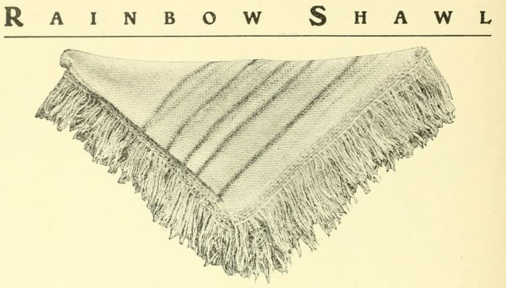

ОДЯГ
Светр Оверсайз
Рядок 18 з 50
36%
- Оновлено: 12 Квітня, 2026
- Пряжа: Wool Cotton (200m left)
У спільноті з вересня 2024

Fine Weight • 450м залишилось
Sport Weight • 800м залишилось
Sport Weight • 800м залишилось
Sport Weight • 800м залишилось
| ТИП ПРЯЖІ | ГАЧОК | СТІБОК | ДАТА |
|---|---|---|---|
| Merino Bulky | 6.0 mm | Пов.Пет | 01.04.2026 |
| Summer Silk | 3.5 mm | СБН | 22.03.2026 |
| Lace Cotton | 5.0 mm | ССН | 15.03.2026 |
| Lace Cotton | 2.0 mm | Пов.Пет | 15.03.2026 |
| Lace Cotton | 2.0 mm | ССН | 15.07.2026 |